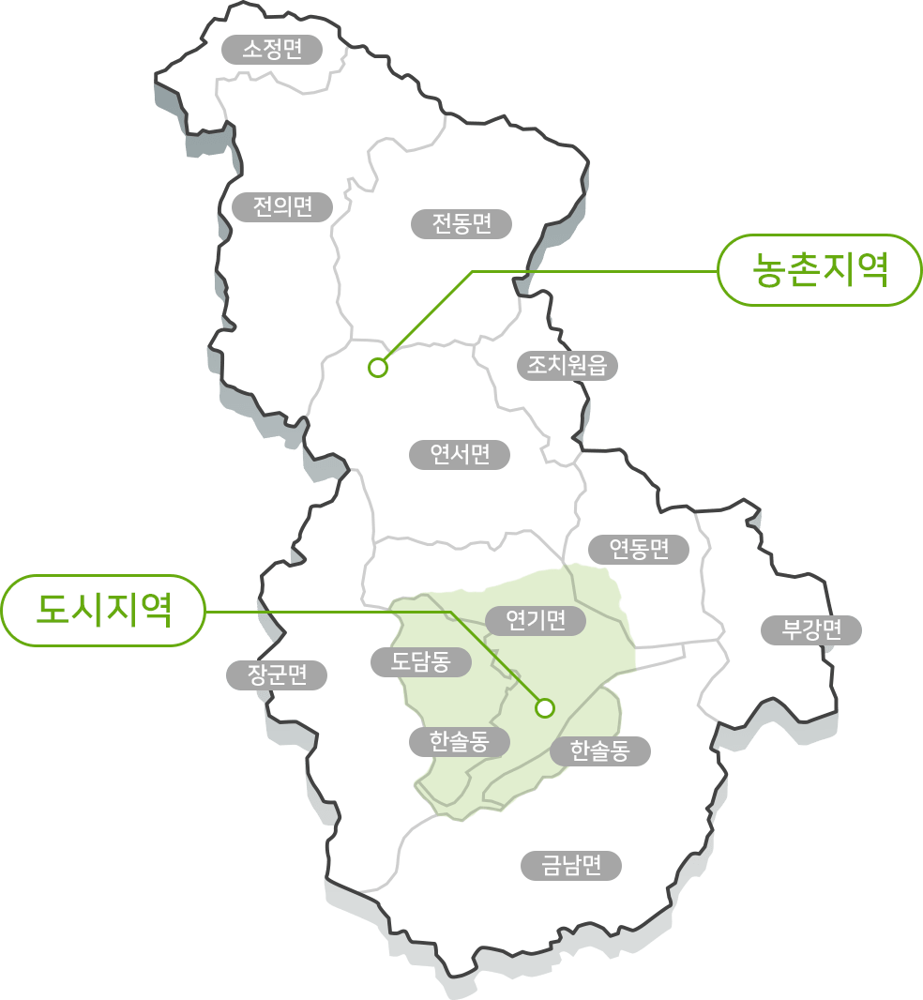

<!--#include file="inc/header.asp"-->
<jsp:include page="inc/header.asp"/>

<div id="wrap">
	<!-- header -->
	<div id="header">

		<div class="head sub">
			<a href="javascript:" class="btn_back"><i></i></a>
			<h1 class="title"><a href="#">세종형 로컬푸드</a></h1>
			<a href="javascript:" class="btn_search"><i></i></a>
			<div class="allmenu">
				<a href="#btn_close" class="btn_open"><i></i></a>
				<a href="javascript:" class="btn_search_close">닫기</a>
			</div>
		</div>
		
		<!--#include file="inc/gnb.asp"-->
		<jsp:include page="inc/gnb.asp"/>

		<ul class="depth3 gray">
			<li class="on w50"><a href="#">세종형 로컬푸드</a></li>
			<li class="w50"><a href="#">왜 로컬푸드인가?</a></li>
		</ul>

	</div>
	<!-- //header -->
	
    <div id="container">

	    <!-- 개별 페이지 -->
	    <div id="content">

			<section class="sect-t01 sejong">

				

				<!-- <div class="btn_both">
					<div class="fl">세종형 로컬푸드</div>
				</div>

				<div class="wrap_cont">
					<strong class="tit_intro">세종시 도시와 농촌이 함께 살아가는 희망프로젝트 “로컬푸드 운동”</strong>
					<p class="desc_info">도시 지역과 농촌지역이 공존하는 우리시의 특성을 살려 우리지역에서 생산된 농산물을 우리지역에서 소비하는 도농상생과 지역 균형발전을 추진하고 도시와 농촌의 물리적 사회적 거리를 축소하는 지역화합의 협동경제 모델로 로컬푸드 운동을 핵심 지역 활성화 전략으로 설정하고, 세종시정 2기의 역점사업으로 추진하고 있습니다.</p>
				</div>

				<div class="area_cont">
					
					<p>가족의 건강을 생각하는 마음으로 농산물을 재배하고 / 당일 수확한 신선한 먹거리를 / 생산자와 소비자가 만족하는 착한 가격으로 공급해 / 도시와 농촌이 함께 더불어 살아가는 운동</p>
				</div> -->

			</section>

	    </div>
	    <!-- //개별 페이지 -->

    </div>

<!--#include file="inc/footer.asp"-->
<jsp:include page="inc/footer.asp"/>